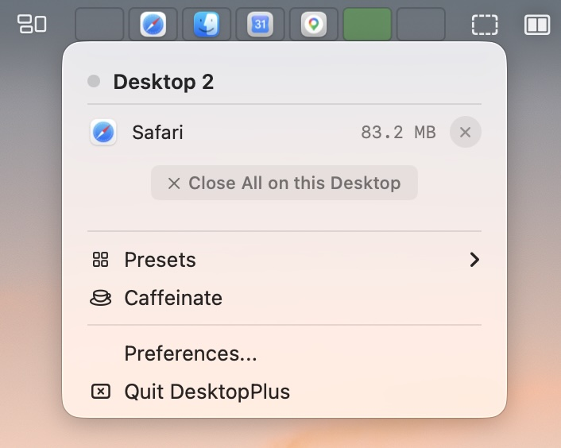
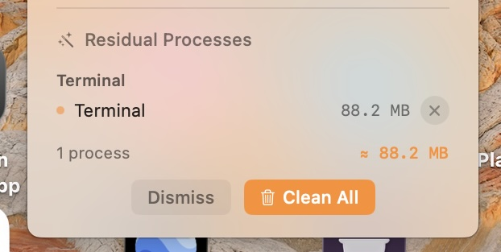

1. The Problem with Default macOS Spaces
macOS Spaces (Apple's implementation of virtual desktops) is one of the most powerful multitasking features on the Mac. Whether you are working on a MacBook Neo, MacBook Air, MacBook Pro, or an external workstation, dividing your work across multiple virtual desktops lets you keep code editors, communication tools, design canvases, and research tabs cleanly organized—even without external displays.
However, macOS has a frustrating design oversight that has bugged power users for over a decade: macOS never tells you which Space you are currently on, or what is sitting on the next and previous screens.
Once you switch to a desktop, there is zero persistent visual feedback in the menu bar or Dock indicating whether you are on Desktop 1, Desktop 3, or Desktop 5. You are forced to rely on memory or constantly trigger Mission Control just to re-orient yourself.
Studies on developer and knowledge worker productivity indicate that micro-interruptions—such as bringing up Mission Control to check where a browser window lives—break cognitive flow state and cost up to 15 to 25 minutes of regained focus every day.
2. Why Native Gestures and Shortcuts Cause Fatigue
Apple gives you three default ways to navigate between virtual desktops, but each comes with serious ergonomic drawbacks:
- Three- or Four-Finger Trackpad Swipes: Smooth on a laptop trackpad, but repetitive swiping across an 8-hour workday causes fatigue—and if you use an external mouse at a desk, horizontal switching is clunky or requires custom button mapping.
- Ctrl + Left/Right Arrow: Sequential navigation means jumping from Desktop 1 to Desktop 4 requires pressing the shortcut three times in a row and sitting through three full-screen sliding animations.
- Ctrl + Number Keys: Apple allows mapping Ctrl + 1, Ctrl + 2, etc., in System Settings > Keyboard > Keyboard Shortcuts > Mission Control. Even then, you still have no visual cue showing which number holds which apps.
3. The Solution: A Persistent Menu Bar Space Indicator
The ideal workflow is simple: your top menu bar should always show your open virtual desktops, clearly highlight the active one, show what is open on adjacent screens, and let you jump directly to any Space with a single click—while still working seamlessly with native macOS swipe gestures.
This is exactly what DesktopPlus delivers. Built natively with Swift and SwiftUI (no Electron, no background daemons, no performance overhead), DesktopPlus stays out of your way while giving you instant visibility and control over your desktops, open apps, presets, and memory on macOS 15.0 and later.
4. Step-by-Step Setup Tutorial
Getting DesktopPlus running on your Mac takes less than 60 seconds:
Download and Install the Apple-Notarized Disk Image
Download the latest release of DesktopPlus (.dmg) (macOS 15.0 or later). DesktopPlus is signed with an Apple Developer ID and notarized by Apple, so it installs cleanly—just open the DMG and drag DesktopPlus.app into your /Applications folder.
Launch & Grant Accessibility Permissions
Open DesktopPlus from Spotlight (Cmd + Space) or Applications. When prompted, grant Accessibility permission under System Settings > Privacy & Security > Accessibility so DesktopPlus can detect and switch Spaces safely without modifying system files.
Pick Your Style & Enable Launch at Login
Your active desktops appear immediately in your menu bar. Click any space indicator to jump straight to it, and enable Launch DesktopPlus at login in Preferences so it starts silently every time you log in.

5. Customizing Display Styles & Preferences
Every workspace has its own visual rhythm. DesktopPlus includes four carefully crafted display modes so your menu bar indicator blends naturally into macOS:
- Rectangles: Clean, minimal rectangular tiles that clearly highlight your active Space while keeping your menu bar distraction-free.
- Numbers: Compact numeric indicators (
1,2,3…)—great when you want minimal horizontal width around the MacBook camera notch. - Rectangles + Numbers: Combines framed desktop boxes with crisp space numbers so you can scan desktop positions instantly.
- Opened Apps: Shows the icons of open applications right inside each desktop box, letting you see at a glance what is running on your current, previous, and next Spaces before switching.

Beyond display modes, the Preferences panel lets you fine-tune appearance and behavior without clutter: pick a custom Active space color, adjust Border opacity for more pronounced outlines, enable Wider desktop boxes, toggle the Hot zone popup, or even enable Move window to desktop when dragged to menu bar.
By default, macOS dynamically reorders your virtual desktops based on most recent use, which disrupts spatial muscle memory. To lock your Spaces in permanent order, open System Settings > Desktop & Dock, scroll to Mission Control, and toggle OFF "Automatically rearrange Spaces based on most recent use".
6. Workspace App Presets, Quick Launch & Recent Apps
In DesktopPlus v1.0.8, menu bar space navigation goes beyond switching windows—it helps you launch and recover complete workflows in a single click.
Workspace App Presets & Quick Launch
Instead of manually opening the same four or five apps every time you switch between coding, design, writing, or client calls, Workspace App Presets & Quick Launch lets you save custom snapshots of your currently open applications into reusable presets. Whenever you need that setup again, pick your preset from the menu to instantly restore and launch the entire multi-app workflow with a single click.

Recent Apps in the Hot Zone Popover
Closed an app to clear clutter and immediately realized you need it back? DesktopPlus now displays a Recent Apps list right inside the hot zone popover (shown in the top screenshot above), showing your most recently closed apps so you can reopen them in one click without digging through Spotlight or the Applications folder.
7. Feature Comparison: Apple Default vs. DesktopPlus
Here is how the default macOS Spaces workflow compares to running DesktopPlus in your menu bar:
| Multitasking Feature | macOS Default (Apple) | DesktopPlus (v1.0.8) |
|---|---|---|
| Active Space Indicator | None (Hidden) | Always Visible in Menu Bar |
| Switching Mechanism | Gestures or sequential arrows | 1-Click Switch + Native Swipes |
| Indicator Display Modes | N/A | Rectangles, Numbers, Combined & Opened Apps |
| Workspace App Presets & Quick Launch | Manual app launching | 1-Click Saved Workflow Snapshots |
| Recent Apps & Per-Desktop Task Manager | Dock / Activity Monitor only | Hot Zone Popover + Per-App RAM & Close |
| Residual Process & RAM Cleanup | Manual via Activity Monitor | 1-Click Residual Process Cleaner |
| Architecture & Verification | Built into WindowServer | Native Swift & SwiftUI • Apple Notarized |
8. Bonus Tools: Integrated Task Manager & Residual Process Cleaner
Running heavy IDEs, browsers, and background utilities on MacBooks—especially 8GB and 16GB unified memory models—often leaves memory tight and stray helper processes running even after you quit an app.
DesktopPlus includes an Integrated Task Manager right inside the menu bar popover. You can view opened apps grouped by desktop, check each app's memory usage, close individual apps or click Close All, toggle Caffeinate or Sleep, and watch live System Memory usage without ever opening Activity Monitor.
When lingering background processes remain after closing apps, DesktopPlus detects those Residual Processes and lets you clean them with a single click to reclaim RAM instantly and keep your Mac snappy.

9. Frequently Asked Questions
Apple does not natively provide a menu bar desktop indicator. With DesktopPlus, your active virtual desktops remain visible in the top menu bar using your choice of Rectangles, Numbers, Rectangles + Numbers, or Opened Apps icons.
Workspace App Presets let you save custom snapshots of your currently open applications into reusable presets. Whenever you want to jump back into a specific project setup, you can restore and launch the complete multi-app workflow with a single click.
No—DesktopPlus never requires disabling SIP, installing kernel extensions, or modifying system binaries. It is written natively in Swift and SwiftUI, signed with an Apple Developer ID, and checked by Apple as an Apple Notarized Application.
DesktopPlus requires macOS 15.0 or later and is built to make multitasking effortless on MacBook Neo, MacBook Air, MacBook Pro, and desktop Macs—both on single built-in displays and with external monitors.
DesktopPlus is free to try for 14 days with all features unlocked and no payment info required. After the trial, you can keep it with a simple one-time purchase—no recurring subscription.
Take Control of Your Mac Desktops Today
Multitasking on a Mac should feel effortless, not disorienting. By combining a persistent menu bar Space indicator, customizable styles, Workspace App Presets, Recent Apps, and one-click residual process cleanup, DesktopPlus turns macOS virtual desktops into a fast, cohesive workspace.